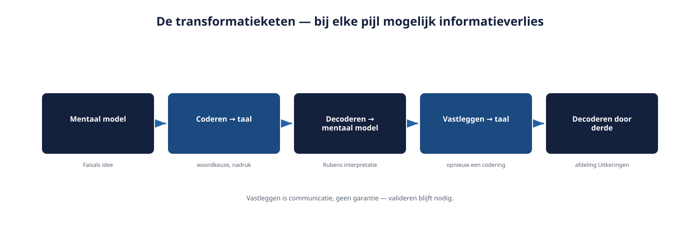

Cursus Requirements engineering · Niveau 1 (CPRE Foundation Level) · Deel 6 van 30
Eén zin, vier lezingen.
"De werkgever kan de aanlevering corrigeren" — één zin uit het functioneel ontwerp van WGP 2.0, en vier afdelingen die er ieder iets anders onder verstonden. In dit deel leert u waaróm taal dat doet, hoe u vier soorten ambiguïteit herkent, en hoe het Ductus-formuleringssjabloon een requirement in natuurlijke taal dwingt tot één, toetsbare lezing — voor het Nabestaandenloket bij Meridiaan Pensioen.
8secties
±1,5uleestijd + werkboek
6controlevragen
R3+R4bevindingen gesloten
Positionering. Deze cursus is een voorbereiding op de CPRE Foundation Level-certificering van IREB en is uitdrukkelijk geen vervanging van het officiële syllabus- en examenmateriaal van IREB, te raadplegen via ireb.org. Alle formuleringen, figuren en werkvormen in dit materiaal zijn van Ductus; studeer voor het examen altijd óók de bron.
Niveau 1: ➊ Wat RE is → ➋ Fundamentele principes → ➌ Belanghebbenden en bronnen → ➍ Elicitatie basistechnieken → ➎ Requirementssoorten en werkproducten → ➏ Formuleringssjabloon (hier) → ➐ Modelgebaseerd → ➑ Kwaliteitseisen → ➒ Beheerbasis → ➓ Examentraining + capstone
01
Waar dit deel over gaat
⏱ 10 min
De vorige twee delen gingen over het gesprek: hoe u doorvraagt (deel 4) en welke vorm een requirement krijgt (deel 5). Dit deel gaat over wat er gebeurt zodra dat gesprek is gevoerd en de uitkomst in woorden op papier moet — de vorm die verreweg het meest voorkomt: gewone, natuurlijke taal.
Aan het eind van dit deel kunt u:
vier soorten ambiguïteit herkennen in requirementstekst: lexicaal, syntactisch, verwijzend en vaag;
het Ductus-formuleringssjabloon toepassen om een requirement in natuurlijke taal eenduidig te formuleren;
uitleggen wat er tijdens communicatie tussen zender en ontvanger kan verschuiven, en waarom precisie dat risico verkleint maar nooit wegneemt;
een oplossing die als eis is opgeschreven herkennen en herformuleren naar een behoefte, met het sjabloon als test.
Dit deel sluit bevinding R4 (meerduidige formuleringen) en de tweede helft van bevinding R3 (oplossingen als eisen) — deel 4 sloot de eerste helft, in het gesprek zelf.
02
De casus: één zin, vier lezingen
⏱ 8 min
Uit de post-mortem van WGP 2.0, voor het eerst genoemd bij bevinding R4 in het casusdossier:
"Er stond: de werkgever kan de aanlevering corrigeren. Wij dachten: aanpassen vóór verwerking. Uitkeringen dacht: terugdraaien ná verwerking."
Vier afdelingen, één zin, en uiteindelijk vier verschillende bouwbeslissingen die pas bij de acceptatietest tegen elkaar aan botsten. De zin was niet slordig geschreven — hij was grammaticaal correct en leek op het eerste gezicht helder. Het probleem zat dieper: het woord "corrigeren" liet meerdere, even geldige lezingen toe, en niemand heeft dat hardop getoetst voordat de bouw begon.
Ruben Doornbos herkent hetzelfde patroon zodra hij de eerste requirementsteksten voor het Nabestaandenloket doorleest: zinnen die op zichzelf redelijk klinken, en die bij navraag bij Wilma, Faisal en Milan alle drie een andere invulling blijken te hebben. Dit deel geeft twee dingen: inzicht in waaróm taal dit doet, en een sjabloon om het risico structureel te verkleinen.
03
Communicatie als transformatieproces
⏱ 14 min
Wanneer Faisal een behoefte in zijn hoofd heeft en die uitspreekt, gebeurt er meer dan het simpelweg "overbrengen" van een gedachte. Er vindt een keten van vertalingen plaats, en bij elke stap in die keten kan iets verschuiven.
Faisal heeft een mentaal model: een idee, gevoel of intentie over wat er moet gebeuren.
Hij codeert dat model in taal: hij kiest woorden, zinsbouw, nadruk. Deze stap is al een vertaling — geen enkele taal legt een gedachte één-op-één vast.
Ruben ontvangt de taal en decodeert die weer terug naar een mentaal model — zíjn model, opgebouwd uit zijn eigen ervaring, aannames en woordgebruik.
Ruben legt vast wat hij begrepen heeft — weer een codering, met weer een eigen risico op verschuiving.
Een derde partij, bijvoorbeeld de afdeling Uitkeringen, leest en decodeert die vastlegging opnieuw, vanuit hún eigen achtergrond.

Figuur 6-1 — de transformatieketen van mentaal model naar taal naar mentaal model, met bij elke pijl een moment van mogelijk informatieverlies
Bij elke stap in deze keten kan betekenis verschuiven, verdwijnen of onbedoeld worden toegevoegd. Dat is geen fout van een van de betrokkenen — het is een eigenschap van communicatie zelf. Precisie in formulering verkleint het risico op verschuiving; het elimineert het nooit volledig. Dat is precies waarom valideren, een doorlopende activiteit die u in deel 9 verder uitwerkt, ook nadat u iets heeft vastgelegd blijft terugkomen: vastleggen is communicatie, geen garantie.
Bij "de werkgever kan de aanlevering corrigeren" ging de verschuiving vermoedelijk al bij stap 2 mis: de oorspronkelijke spreker had zelf een beeld bij "corrigeren" dat hij niet expliciet maakte, omdat het voor hém vanzelfsprekend was. Vanzelfsprekendheid bij de zender is een van de grootste risicofactoren voor ambiguïteit bij de ontvanger.
04
Vier soorten ambiguïteit
⏱ 18 min
Ambiguïteit is niet één verschijnsel. Het scherper leren onderscheiden van de soorten helpt u sneller herkennen waar een tekst kwetsbaar is.
Lexicale ambiguïteit
Eén woord, meerdere betekenissen. "Corrigeren" kan aanpassen vóór verwerking betekenen, of terugdraaien ná verwerking — twee volledig verschillende handelingen met hetzelfde woord. Ook woorden als "verwerken", "bijwerken" en "afhandelen" zijn in requirementstaal berucht lexicaal ambigu.
Syntactische ambiguïteit
De zinsbouw laat meerdere lezingen toe, ongeacht de woordbetekenis. "Meldingen van overleden deelnemers die zijn ingediend door een uitvaartondernemer worden extra gecontroleerd." Slaat "die zijn ingediend door een uitvaartondernemer" op de meldingen, of op de deelnemers? De zin is grammaticaal correct in beide lezingen.
Verwijzende ambiguïteit
Een verwijzend woord — hij, deze, het systeem, ze — zonder een ondubbelzinnig aanknopingspunt. "Als de nabestaande de melding heeft ingediend en de medewerker heeft haar gecontroleerd, wordt zij geïnformeerd." Wie is "zij" — de nabestaande of de medewerker?
Vaagheid
Geen dubbele lezing, maar een ontbrekende grens: het is niet duidelijk vanaf welk punt iets wel of niet geldt. "Snel", "meestal", "voldoende", "op korte termijn", "waar mogelijk". Dit raakt direct aan bevinding R5 (kwaliteitseisen, deel 8), maar speelt ook binnen functionele requirements: "bij een groot aantal foutieve meldingen wordt er een melding gestuurd naar de beheerder" — wat is "groot"?
Figuur 6-2 — vier soorten ambiguïteit, elk met het voorbeeld uit deze paragraaf en de vraag die de ambiguïteit blootlegt
Waarom dit onderscheid nuttig is
Elke soort ambiguïteit vraagt een andere reparatie. Lexicale ambiguïteit lost u op door het dubbelzinnige woord te vervangen door een preciezer werkwoord ("aanpassen vóór verwerking" in plaats van "corrigeren"). Syntactische en verwijzende ambiguïteit lost u op door de zin te herstructureren, vaak door hem korter en directer te maken. Vaagheid lost u op door een grens te benoemen — een getal, een norm, een concreet criterium.
Wat de vier gemeen hebben
Ze zijn bij het schrijven zelf vaak onzichtbaar voor de schrijver, precies omdat hij zijn eigen bedoelde lezing al in gedachten heeft. Ambiguïteit ontdekt u zelden door uw eigen tekst te herlezen; u ontdekt hem door iemand anders te laten lezen, of door de tekst hardop aan een ander voor te leggen.
Controlevragen
Uit Werkboek deel 6, Opdracht 6.1 — welke soort ambiguïteit?
1"Meldingen worden binnen korte tijd opgepakt." Welke soort ambiguïteit speelt hier, en waarom?Toon antwoord
Vaagheid. "Korte tijd" heeft geen grens — een uur, een dag, een week? Er is geen dubbele lezing, maar een ontbrekend criterium waarvandaan iets wel of niet als "op tijd" telt.
2"Bij veel foutieve meldingen wordt de teamleider geïnformeerd." Welke soort ambiguïteit speelt hier?Toon antwoord
Vaagheid. "Veel" is niet gekwantificeerd — net als bij de eerste vraag ontbreekt de grens, niet de duidelijkheid van de zinsbouw.
3"De aanvraag wordt afgehandeld door de medewerker die de melding heeft gecontroleerd." Welke soort ambiguïteit speelt hier het sterkst?Toon antwoord
Verwijzend. Welke medewerker "de melding heeft gecontroleerd" is impliciet verondersteld bekend, maar niet eerder in de zin zelf geïntroduceerd — dat leidt tot onduidelijkheid bij losstaand lezen, bijvoorbeeld in een backlogitem zonder verdere context.
05
Het Ductus-formuleringssjabloon
⏱ 22 min
Om ambiguïteit structureel te verkleinen, gebruikt Ductus een vast sjabloon voor functionele requirements in natuurlijke taal:
Het sjabloon
Als ⟨triggerconditie, indien van toepassing⟩, dan ⟨systeem⟩ moet/mag ⟨werkwoord⟩ ⟨object⟩ ⟨eventueel: onder welke randvoorwaarde⟩.
Vier onderdelen verdienen toelichting.
De triggerconditie
Niet elke requirement heeft een trigger nodig, maar als een requirement alleen ondér een bepaalde omstandigheid geldt, hoort die omstandigheid vooraan, expliciet. Dit voorkomt de verwijzende ambiguïteit uit sectie 4: door de conditie eerst te noemen, is duidelijk waar de rest van de zin op slaat.
Het systeem als onderwerp
Consequent hetzelfde systeem als onderwerp gebruiken — niet afwisselend "het loket", "de applicatie", "het portaal" voor hetzelfde ding — voorkomt dat een lezer zich afvraagt of er een verschil bedoeld is.
Het modale werkwoord: moet of mag, nooit iets ertussenin
Dit is de scherpste regel van het sjabloon. "Moet" betekent een verplichting zonder uitzondering. "Mag" betekent een toegestane mogelijkheid, geen verplichting. Vermijd bewust vage modaliteiten als "zou moeten", "kan eventueel", "wordt geacht" — die laten precies de speelruimte open die tot ambiguïteit leidt. Twijfelt u tussen "moet" en "mag", dan is dat zelf een signaal dat de requirement nog niet scherp genoeg is doorgevraagd (deel 4).
Eén werkwoord, één handeling per zin
Een zin met "en" die twee handelingen combineert — "het systeem registreert de melding en informeert de medewerker" — oogt onschuldig, maar verbergt twee aparte requirements die apart getest, gewijzigd en herleid moeten kunnen worden. Splits ze.
Figuur 6-3 — het sjabloon als schema met elk onderdeel gelabeld
Het sjabloon toegepast
Oorspronkelijk (ambigu): "De werkgever kan de aanlevering corrigeren."
Herschreven met het sjabloon: "Als een aanlevering nog niet is verwerkt in de uitkeringsberekening, mag de werkgever de aanlevering aanpassen in het portaal." — en apart: "Als een aanlevering al is verwerkt in de uitkeringsberekening, moet de werkgever een wijzigingsaanvraag indienen die door een medewerker van Uitkeringen wordt beoordeeld."
Twee zinnen in plaats van één, en wat eerst één ambigu requirement leek, blijkt bij nader inzien twee requirements te zijn die toevallig hetzelfde woord ("corrigeren") deelden. Dat is geen toeval: ambiguïteit verbergt vaak niet één onduidelijke requirement, maar meerdere requirements die per ongeluk zijn samengevoegd.
Het sjabloon en oplossingen-als-eisen
Het sjabloon dwingt ook de andere helft van bevinding R3 af. "Er komt een wizard in vier stappen" past niet in het sjabloon — er is geen conditie, geen duidelijk "moet/mag", en het object ("een wizard") is een oplossing, geen gedrag. Wie dit probeert in te passen, merkt vanzelf de wringing: "Als een nabestaande een melding indient, moet het systeem… een wizard tonen?" Dat klinkt meteen anders dan "Als een nabestaande een melding indient, moet het systeem de nabestaande stap voor stap door de benodigde gegevens leiden, zodat een onvolledige melding wordt voorkomen." De tweede zin laat de oplossing — wizard, ander ontwerp, iets anders — nog open; de eerste sluit hem stiekem al vast.
Het sjabloon is dus niet alleen een grammaticale vorm. Het is een test: als een zin er niet natuurlijk in past, is dat vaak een teken dat er een oplossing verstopt zit waar een behoefte hoort te staan.
Controlevragen
Uit Werkboek deel 6, Opdracht 6.3 en 6.4 — herschrijven met het sjabloon
1Herschrijf "Er komt een uploadknop voor de akte van overlijden" met het sjabloon.Toon antwoord
"Als het overlijden nog niet is bevestigd via het BRP-signaal, moet het systeem de nabestaande in staat stellen een bewijsstuk aan te leveren." De oplossing "uploadknop" is losgelaten; de vorm van het bewijsstuk blijft open.
2Bij welke van de vier oorspronkelijke zinnen uit opdracht 6.3 wringt het herschrijven het duidelijkst als teken van een verstopte oplossing, en wat is de onderliggende behoefte?Toon antwoord
Bij de uploadknop: "een uploadknop" past niet natuurlijk als object bij "moet het systeem… aanleveren" zonder dat de zin krampachtig wordt. Dat wringen is het signaal. De onderliggende behoefte: het overlijden moet aantoonbaar zijn wanneer het BRP-signaal ontbreekt. Ter vergelijking wringt "de medewerker kan de status altijd inzien en aanpassen" bij het woord "altijd" — maar dat wijst op een ontbrekende voorwaarde (machtiging), niet op een verstopte oplossing; niet elke wringing is dus hetzelfde type probleem.
06
Grenzen van het sjabloon
⏱ 12 min
Het sjabloon is krachtig voor requirements met een duidelijke trigger en een duidelijk gedrag. Het is minder geschikt voor:
rijke context en rationale — waarom iets zo is, hoort in begeleidende tekst naast het sjabloon, niet erin geperst;
combinaties van meerdere voorwaarden — bij drie of meer voorwaarden die op elkaar inwerken, is een tabel duidelijker dan een lange reeks als-danzinnen (vergelijk deel 5, over de vorm als bewuste keuze);
kwaliteitseisen — die hebben een net iets andere vorm nodig; deel 8 werkt dit uit.
Dit is geen tegenspraak met deel 5, maar een bevestiging ervan: de vorm is een keuze per requirement, en het sjabloon is de vorm voor tekst binnen die keuze — niet een vervanging van modellen of tabellen.
Wat verandert er als u iteratief werkt?
Het sjabloon werkt net zo goed op het niveau van een acceptatiecriterium bij een backlogitem als op het niveau van een grote requirement. De veelgebruikte Given/When/Then-vorm bij user stories is in wezen een variant van hetzelfde sjabloon: een triggerconditie gevolgd door een verplicht gedrag. De valkuil blijft ook daar hetzelfde: een acceptatiecriterium dat een schermelement beschrijft in plaats van een gedrag, is nog steeds een oplossing verpakt als eis — nu alleen in een kortere zin.
Controlevraag
Uit Werkboek deel 6, Opdracht 6.5 — grenzen van het sjabloon
1De beslistabel over het corrigeren van een aanlevering uit deel 5 bevat vijf zinnen met combinaties van vier voorwaarden. Wat gaat er mis als u probeert de volledige regel in één sjabloonzin te persen, en welke conclusie trekt u daaruit?Toon antwoord
De volledige regel is niet in één sjabloonzin te vatten zonder de zin extreem lang en met geneste als-dan-constructies te maken — precies het euvel van de oorspronkelijke, vage tekst. Het sjabloon werkt uitstekend voor élk van de afzonderlijke regels uit de tabel afzonderlijk (bijvoorbeeld: "Als een aanlevering nog niet is verwerkt, mag de werkgever de aanlevering aanpassen"), maar niet voor de combinatie van meerdere voorwaarden tegelijk. Conclusie: het sjabloon is de vorm voor een enkele, scherp afgebakende regel. Zodra drie of meer voorwaarden tegelijk een uitkomst bepalen, is een tabel de juistere vorm, met eventueel losse sjabloonzinnen als toelichting per cel.
07
Wat het examen hierover vraagt
⏱ 12 min
Deze cursus is een voorbereiding op de CPRE Foundation Level-certificering van IREB en uitdrukkelijk geen vervanging van het officiële syllabus- en examenmateriaal, te raadplegen via ireb.org. In het examen komt de stof van dit deel vooral terug in vragen die vragen om:
een van de vier soorten ambiguïteit — lexicaal, syntactisch, verwijzend, vaag — te herkennen in een gegeven zin;
uit te leggen waarom vastleggen in natuurlijke taal het risico op verschuiving verkleint, maar nooit volledig wegneemt;
een verstopte oplossing te herkennen in een requirement die op het eerste gezicht als gedrag geformuleerd lijkt;
te bepalen wanneer natuurlijke taal (met sjabloon) de juiste vorm is, en wanneer een tabel of model beter past.
Een veelvoorkomende valkuil
Examenvragen presenteren vaak een zin met méér dan één laag ambiguïteit tegelijk — bijvoorbeeld een verwijzend woord én een vage term in dezelfde zin. Kies bij twijfel de soort die het sterkst en het eerst tot een verkeerde lezing leidt, en wees u ervan bewust dat het scherpst onderscheidende kenmerk soms subtieler is dan het eerst opvallende woord.
Bevinding R3 (oplossingen als eisen) is nu van twee kanten gedekt: in het gesprek, door het doorvragen uit deel 4, en in de vastlegging, door het sjabloon dat een verpakte oplossing zichtbaar maakt doordat hij er niet natuurlijk in past.
Bevinding R4 (meerduidige formuleringen) is gedekt door het herkennen van de vier soorten ambiguïteit en door het sjabloon dat de meest voorkomende bronnen van ambiguïteit — onduidelijke triggers, vage modaliteit, samengevoegde handelingen — structureel wegneemt.
Ruben kan hiermee teruggaan naar de requirementstekst voor het Nabestaandenloket en, zin voor zin, de zwakke plekken aanwijzen zonder dat het voelt als een aanval op wie de zin oorspronkelijk schreef: het sjabloon is een gedeeld instrument, geen correctie van een persoon.
Vooruit naar deel 7. Wat u nog niet heeft: een manier om deze werkwijze consequent toe te passen op grafische modellen in plaats van tekst. Deel 7 gaat over modelgebaseerde requirements — doel-, gebruiks- en gedragsmodellen — voor de gevallen waarin tekst, hoe zorgvuldig ook geformuleerd, niet de beste vorm is.
Verder naar deel 7
Deel 7 gaat over modelgebaseerde requirements: doel-, gebruiks- en gedragsmodellen, voor de gevallen waarin tekst niet de beste vorm is. Neem het sjabloon uit dit deel mee — het blijft de vorm voor elke tekstuele requirement die u daarna nog schrijft.